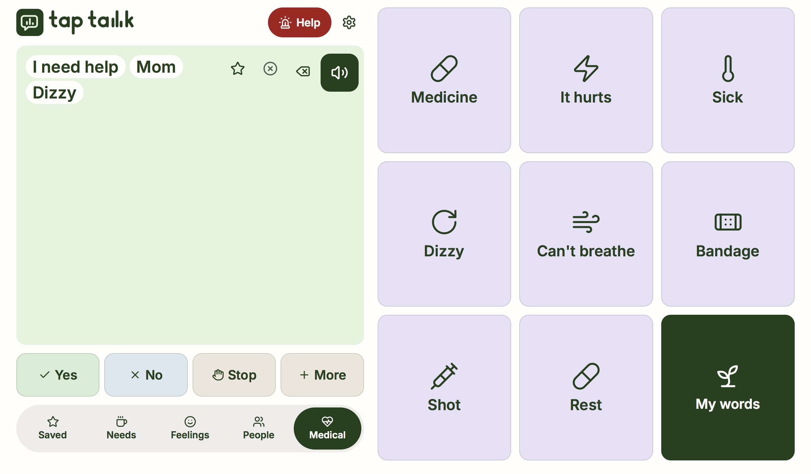
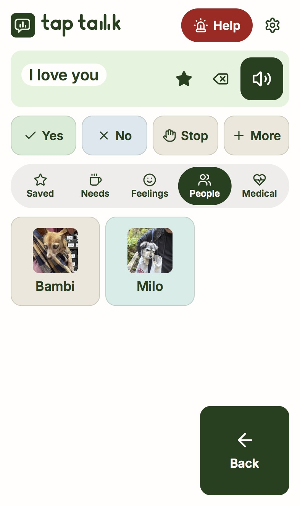
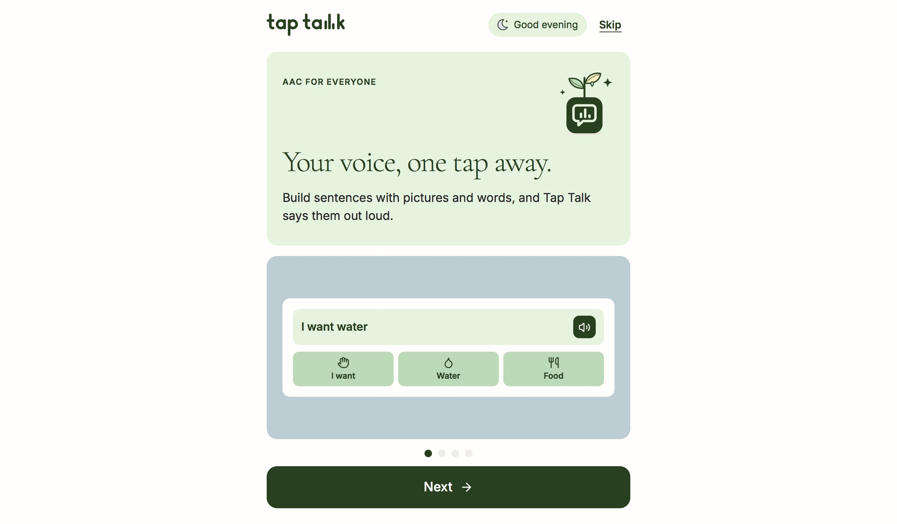
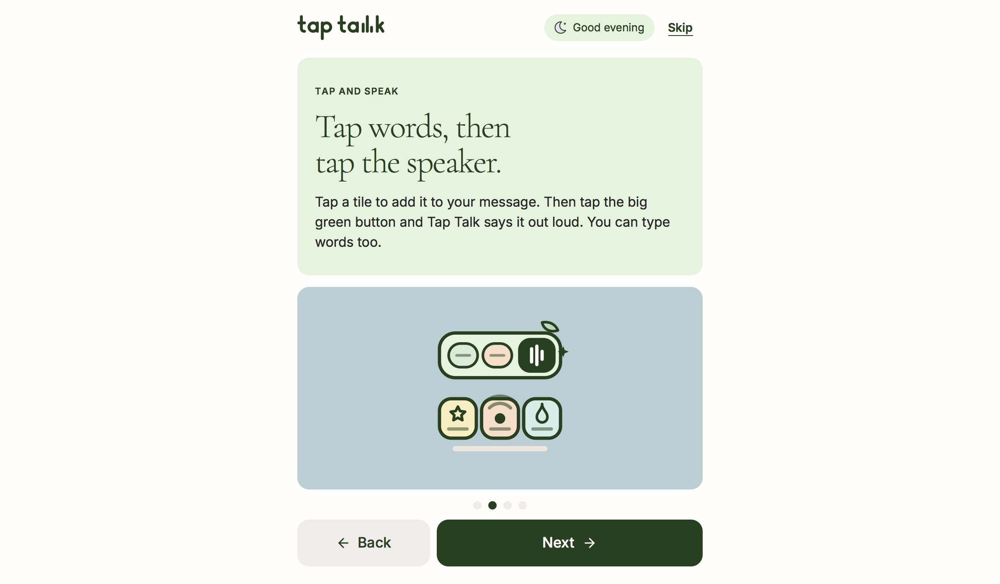
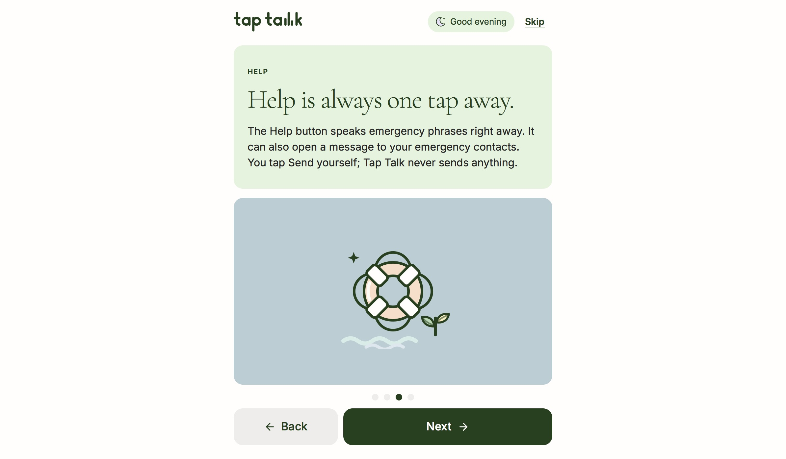
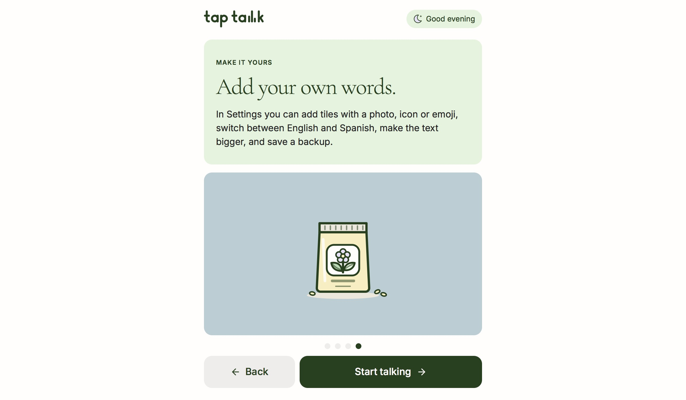
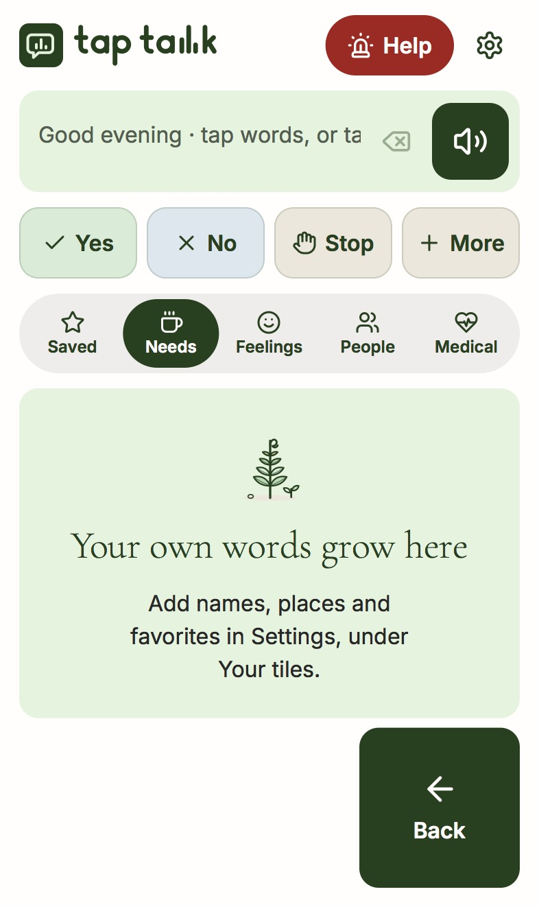

How fast can someone who can’t speak get a sentence out?
Tap Talk is a free app that talks for you. You tap words or pictures, tap the speaker, and it says them out loud.


The short version
What’s in the way
People who can’t speak need words fast. Most AAC apps cost too much, feel like they were made for kids, or bury everything in folders.
What I found
I read 320+ reviews of 12 apps. People didn’t quit over missing features. They quit because they couldn’t find anything, or the app talked down to them.
What I built
Opens straight to talking. Five categories that don’t move, Yes/No/Stop always visible, a first run you can skip, and photo tiles for the people you love.
Where it is now
It’s live, free, and works offline. I checked it against WCAG myself. I haven’t done formal usability testing yet, so I’m not claiming results.
Want to see how it feels?
This is the live app running right here. Turn your sound on, tap a few words, then tap the speaker.
Who reaches for an app like this? More people than I first pictured.
Speech lost suddenly
Someone who had a stroke last week, or just woke up from surgery. They could talk yesterday. Right now they mostly need a handful of words that matter, like water, pain or help.
Nonspeaking, any age
Autistic and nonspeaking people who use AAC every day, kids and adults. A lot of the apps they get look like they were made for a kindergarten class, and the adults in the reviews were tired of it.
Can’t talk right now
Someone in a hospital bed, in the middle of a shutdown, or too worn out to talk today. Their speech comes and goes, so the app has to open straight to talking.
Before I drew anything, I read more than 320 reviews of 12 AAC apps. I expected complaints about missing features. Mostly I found people saying the apps cost too much, felt childish, or were hard to find their way around.
“We aren’t all 8-year-old boys. This app is VERY child-centric.”
“The price is steep, and it was a hard pill to swallow having to drop that much on an app.”
“There is a big learning curve in navigation: users relearn basic motor patterns.”
How much should someone have to learn before they can say something?
I landed on four screens with one idea each: what the app is, how to make it speak, where Help is, and how to add your own words. Every screen has a Skip link. If you need to say something right now, a tutorial just gets in the way.




What if the words stayed where you left them?
Saved, Needs, Feelings, People and Medical sit in one bar under the message. Yes, No and Stop sit above it on every screen, because those are the answers people reach for most. On a tablet I gave the message the whole left half so the person you’re talking with can read along.
Navigation kept coming up in reviews as the reason people quit. If getting your hand to the right spot already takes effort, hunting for a word on top of that is exhausting. So the words stay put.
Could a tile look like the person you’re talking about?
In Settings you can add a tile with a photo, an icon or an emoji. I noticed this mattered most in People. You find a face faster than a name, and for a lot of people, someone they love is the first thing they want to say.
Before you’ve added anything, the board tells you where to go next, so you never land on an empty screen.
A dog symbol could be any dog. A photo of Milo is Milo. Your own words and photos are what make the app sound like you, in English or Spanish.

I kept thinking about where people actually are when they need this: a hospital, a bus, a hard day.
Works offline
Once it’s loaded, speech runs on your device. A hospital basement or a dead zone on the bus won’t stop it from talking.
Checked against WCAG
I tested it myself: dark green text on pale tints for contrast, labels on every icon for screen readers, and a text-size setting that makes words bigger without breaking the layout.
Easier to hit
Tiles fill the screen and the labels are big enough to read at arm’s length. Help is always red at the top. I didn’t hide anything important behind a tiny icon.
I don’t have usability numbers yet. Here’s why I think the problem is worth solving.
Tap Talk is live and free. I haven’t run formal usability testing, so I’m not going to claim results I haven’t measured. What I want to find out next is whether it holds up for each of the three groups above, and I’d like to test it with people from all of them.
Building the real thing taught me things my mockups never did.
I had to design every state
A Figma frame never shows an empty board, but the live app shows one the first time anyone opens it. Building it for real meant designing the first run and the empty states, not just the happy path.
AI helped me build faster
I used AI to write and refactor code. Which categories exist, how big a tile is and who it’s for came from the research, and I ran the accessibility checks myself.
I’m clear about what I haven’t proven
There’s no usability data yet. I’d rather say so than make up a number, and it tells me exactly what to test next.